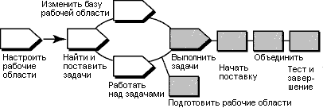

Терминология
Операция унифицированного управления изменениями ClearCase (UCM) отличается от концепции задачи в RUP, не стоит путать эти два понятия.
Обзор
На следующей диаграмме показан поток операций UCM. Затемненные области описаны в этой памятке.

В модели UCM ClearCase изменения исходного кода записываются в виде операций UCM. Операция состоит из набора
изменений, идентифицирующего все версии, созданные во время работы с задачей, а также описательного заголовка.
Чтобы сделать работу из вашей изолированной рабочей области доступной для команда разработчиков проекта, следует
доставить версии, связанные с вашими операциями UCM, из потока разработки в поток интеграции проекта.
ClearCase при необходимости совмещает версии файлов и каталогов из вашего потока разработки с версиями потока
интеграции. Однако, доставленные изменения пока не становятся постоянными, что позволяет проверить доставленные
изменения совместно с прочими продуктами работы в потоке интеграции. После тестирования можно отменить операцию
доставки или выполнить ее, сделав результаты доставки постоянными.
Эта памятка по инструменту применима к Microsoft Windows.
Применение операции доставки ClearCase UCM состоит из двух задач:
-
Подготовка рабочих областей
-
Запуск операции доставки
-
Слияние файлов
-
Тестирование и компоновка работы
-
Выполните операцию доставки
Перед началом операции доставки необходимо подготовить рабочие области, выполнив следующие задачи:
-
С помощью операции перебазирования UCM можно проверить обновление рабочей области разработки для использования
последних рекомендованных контрольных версий проекта.
-
-
Для запуска операции перебазирования на панели задач Windows выберите кнопку Пуск > Программы >
Rational Software > Rational ClearCase > ClearCase Explorer.
-
В ClearCase Explorer щелкните правой кнопкой мыши на корневом каталоге панели разработки и выберите
Перебазировать поток.
-
Следуйте инструкциям мастера перебазирования потока.
-
Перед доставкой работа должна быть добавлена. С помощью утилиты ClearCase Поиск изъятия найдите изъятые
версии.
-
-
Для запуска утилиты Поиск изъятия из ClearCase Explorer перейдите на панель Папка и щелкните
правой кнопкой на папке, в которой требуется выполнить поиск. Выберите во всплывающем меню пункт Найти
изъятия.
-
Появится список изъятых элементов. Выберите элементы для добавления и щелкните правой кнопкой мыши.
Выберите во всплывающем меню пункт Добавить.
Если панель разработки является панелью моментальной копии, следует также выполнить операцию обновления для нее.
Подготовив рабочие области вы готовы к запуску операции доставки, при этом ClearCase интегрирует изменения из рабочей
области разработки в рабочую область интеграции. Файлы изъяты и перенесены в панель интеграции.
Для запуска операции интеграции перейдите в ClearCase Explorer и щелкните правой кнопкой на корневом каталоге панели
разработки. Выберите во всплывающем меню пункт Доставить из потока.
ClearCase объединяет работу в потоке разработки с работой из потока интеграции. Простые слияния выполняются за вас
автоматически, а при обнаружении конфликтов слияния утилита ClearCase DiffMerge предлагает вам устранить конфликты.
Для обеспечения совместимости доставленной работы с работой из потока интеграции, обновите панель интеграции,
отражающую результаты слияния, выполненного в предыдущем действии, и скомпонуйте и протестируйте файлы.
Помимо компоновки и тестирования вам может понадобиться следующее:
-
Измените изъятые версии для устранения ошибок компоновки.
-
Изымите и измените дополнительные файлы.
СМ. Памятка по инструменту: обновление рабочей области проекта с помощью
Rational ClearCase.
Убедившись, что ваши изменения совместимы с последней работой из проекта, выполните операцию доставки из панели
разработки, в которой она была запущена. Вы также можете отказаться от операции. На этом этапе выполняется добавление
файлов, созданных при операции слияния, и прочие обслуживающие задачи.
 См. электронную справку
Разработка ПО для получения дополнительных сведений о каждом этапе. См. электронную справку
Разработка ПО для получения дополнительных сведений о каждом этапе.
|